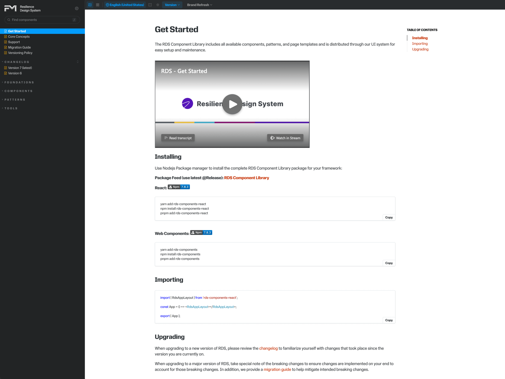
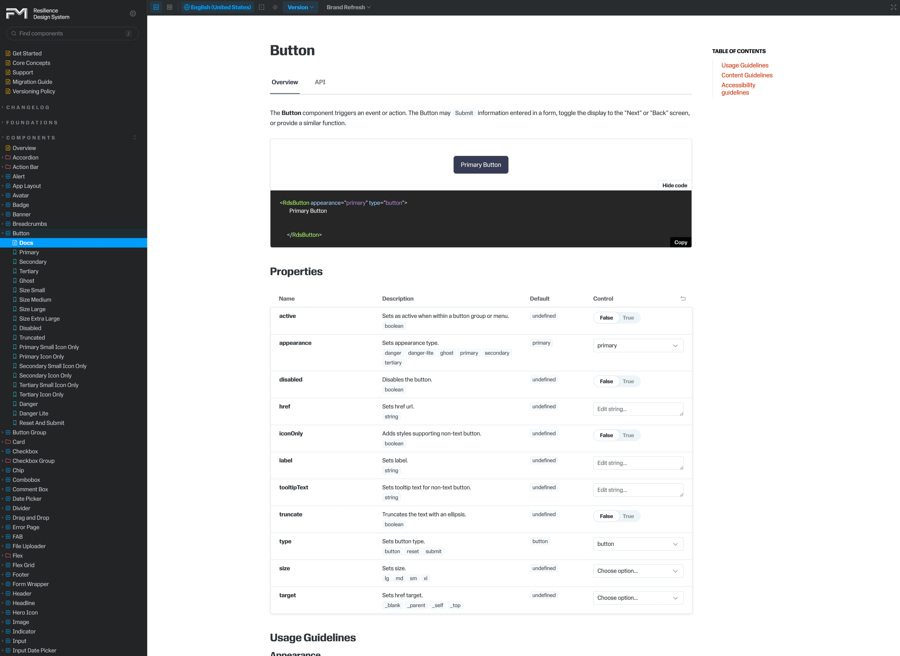
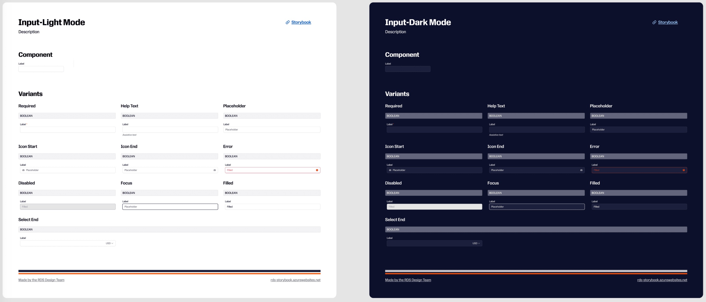
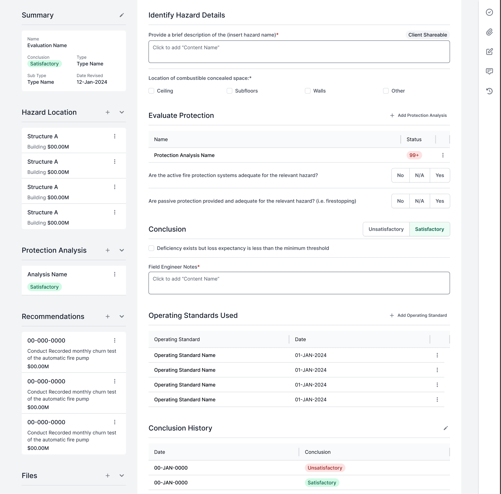
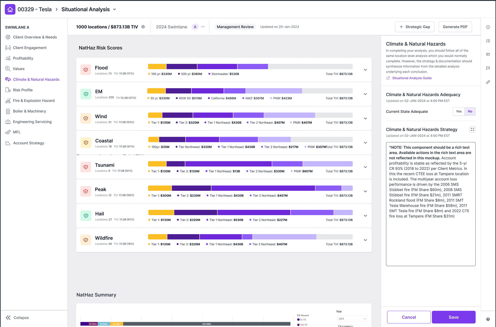
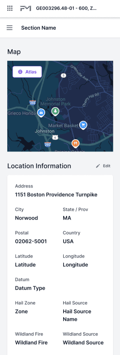
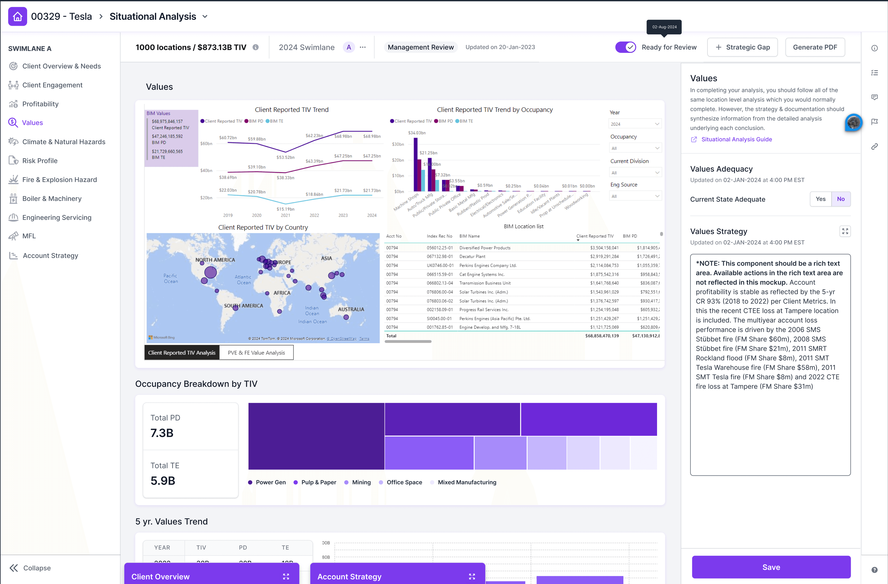
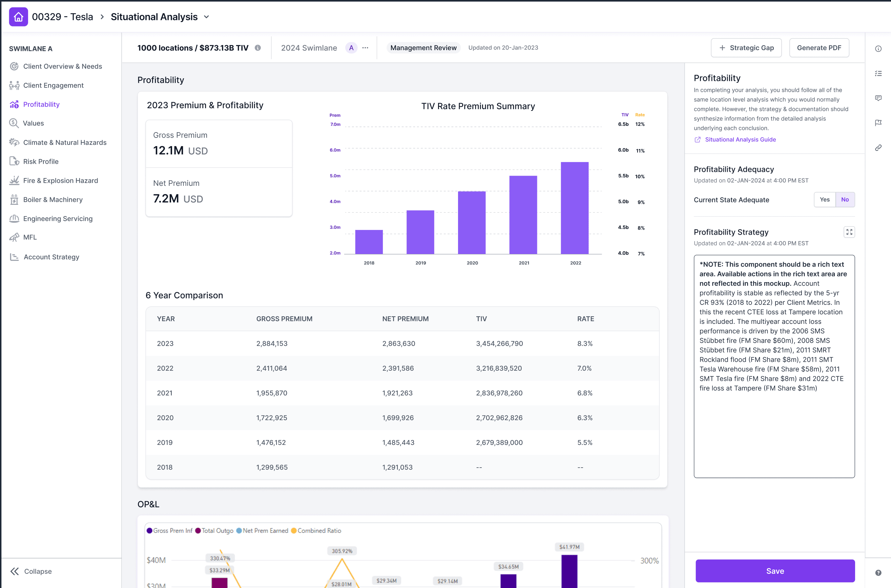
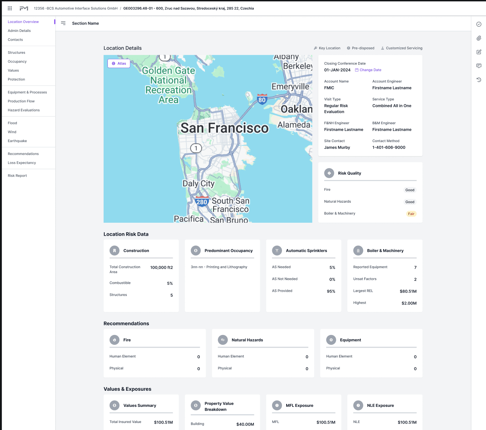

Before this system existed, every product team was building UI from scratch: inconsistent components, duplicated effort, and no shared source of truth between design and engineering. As FM Global scaled its digital products, that inconsistency was slowing teams down and creating a fragmented experience for users.
Design System Manager
1 Designer, 5 Developers, 1 Content Writer, 2 QA
Ongoing
Continuous deployment
I started with a design audit across existing products to identify recurring patterns and pain points. From there, I built a scalable design language (components, tokens, and documentation standards) and worked cross-functionally with engineering to ensure the system held up technically, not just visually. Governance processes kept quality and accessibility consistent as the system grew.
Establish a unified system that would accelerate product development and ensure consistency across new product lines as the organization scaled.









This system is still growing today, but its impact is already clear: faster builds, fewer one-off components, and a more consistent experience across FM Global's product suite.